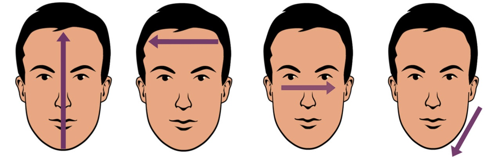
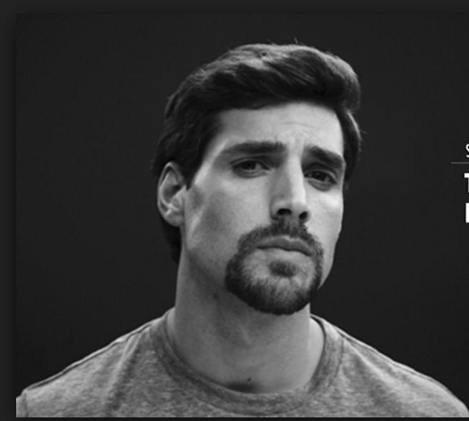

Râu có thể thay đổi hoàn toàn ngoại hình và thay đổi diện mạo của bạn nhưng để có được bộ râu rực rỡ và uy nghi như ý muốn, tất cả chúng ta đều phải kiên nhẫn và cảnh giác. Một người yêu thích râu quai nón thực sự biết tất cả những gì cần biết về râu , cách chăm sóc râu và mọi thứ liên quan đến chủ đề này. Một bộ râu đẹp cố thể giúp bạn trở nên nam tính và "ngầu" hơn bao giờ hết!
Râu ria luôn là một trong những mối bận tâm quan trọng của phái mạnh, thay vì phải cạo nhẵn đi thì tìm hiểu về cách để râu đẹp không chỉ giúp cải thiện vẻ ngoài của bạn mà còn giúp bạn gây ấn tượng đầu tiên mạnh mẽ trong mắt người khác.
Điều tuyệt vời ở bộ râu là ở cách bạn chăm chút và “làm đẹp” cho nó. Việc sở hữu được một bộ râu đẹp không chỉ giúp bạn thay đổi ngoại hình trở nên nam tính, mà còn ngầm tiết lộ rằng bạn là người tỉ mỉ và công phu đến thế nào. Nhưng bạn có lẽ sẽ phân vân loại râu nào sẽ phù hợp với mình. Vậy hãy cùng BookStylist chúng tôi cùng tìm ra bộ râu phù hợp nhất cho bạn nhé. Let's go (≧▽≦)/
Xác định hình dáng khuôn mặt bạn
Đo chiều dài khuôn mặt: Khoảng cách từ đỉnh cằm đến chân tóc mái.
Đo độ rộng trán: Tìm phần rộng nhất trên vùng trán, thường nằm chính giữa đường từ chân lông mày đến chân tóc mái. Đo từ chân tóc bên phải thái dương qua chân tóc bên trái và ghi lại số đo.
Đo độ rộng giữa hai bên gò má: Tìm điểm nhô cao nhất của xương gò má rồi đo khoảng cách từ gò má bên này đến gò má bên kia.
Đo độ rộng xương hàm: Đo từ phần quai hàm ở dưới tai đến đỉnh cằm.

Xác định kiểu râu bạn muốn
Việc đầu tiên bạn cần làm là xác định kiểu râu bạn sẽ nuôi theo sự phù hợp với khuôn mặt của bạn, liệu hình dáng khuôn mặt của mình liệu có phù hợp với kiểu râu nào!. Trên thực tế, có tới tận 7 kiểu hình dáng khuôn mặt khác nhau, với những cấu trúc khung xương phù hợp với từ một đến vài kiểu râu nhất định
Đây là danh sách 7 khuôn mặt và kiểu râu phù hợp bạn hãy xem mình thuộc nhóm nào nhá:
Mặt trái xoan:
Chiều dài khuôn mặt lớn hơn chiều rộng của xương gò má. Phần trán cũng có chiều rộng lớn hơn chỉ số xương hàm đồng thời, xương quai hàm có xu hướng thuôn dài, ít góc cạnh. Là một trong những hình dáng khuôn mặt “dễ chịu” nhất khi nói đến những kiểu râu tóc khác nhau. Nhờ vào tính linh hoạt đến từ chính những đường nét đặc trưng của kiểu khuôn mặt này, bạn sẽ không cần lo nghĩ quá nhiều về kiểu râu nào phù hợp với mình, mà thay vào đó nên tập trung cho việc giữ cho bộ râu của bản thân trông đẹp nhất.
Mặt hình chữ nhật:
Với những người có hình dáng khuôn mặt này, số đo lớn nhất đến từ chiều dài khuôn mặt. Phần trán, xương gò má và xương hàm có kích thước tương tự nhau. Là kiểu dáng khuôn mặt dài do đó chúng ta sẽ phải cắt tỉa phần gò mặt gây thu hút người đối diện làm cho họ không chú ý tới khuôn mặt dài của bạn mà chú ý tới bộ râu. Giúp cho khuôn mặt bạn cân bằng hơn. Lưu ý rằng không nên để râu dài hay cắt nhọn ở cằm điều này sẽ gây sự không hợp mắt cho người đối diện bạn.
Mặt hình tam giác:
Số đo phần hàm dưới lớn chỉ số của xương gò má và vùng trán. Phù hợp nhất với hình dáng khuôn mặt có cấu trúc phần cằm khá nổi bật này đó là kiểu râu ‘beardstache’. Beardstache có thể hiểu đơn giản là sự kết hợp giữa moustache(phần ria ở mép) với short beard(phần ria ngắn xung quanh quai hàm). Kiểu râu này từng là một biểu tượng cho người đàn ông mạnh mẽ thời Victoria, giờ đây, kiểu râu này mang đến cho người đàn ông một vẻ ngoài cực kỳ lạnh lùng và thu hút.
Mặt tròn:
Chiều dài của xương gò má và gương mặt tương đối bằng nhau. Cả hai đều có số đo lớn hơn vùng trán và phần hàm dưới. Quai hàm có xu hướng thuôn dài, ít góc cạnh. Là một trong những hình dáng khuôn mặt được cho là “kén” các thiết kế râu tóc nhất, vì chỉ một chút thiếu sự gọn gàng thôi cũng sẽ làm khuôn mặt to lên gấp vài phần. Vì vậy, để cải thiện những khuyết điểm đến từ kiểu dáng khuôn mặt này, một bộ râu góc cạnh là lựa chọn hoàn hảo nhất.
Mặt trái tim:
Vùng trán có kích thước rộng hơn hơn chiều ngang xương gò má và vùng hàm dưới. Cằm nhọn. Nếu thiết kế râu thiếu khéo léo sẽ biến khuôn mặt bạn trở nên nhỏ và hốc hác hơn do đó chọn lựa kỹ lưỡng bộ râu nào thật sự phù hợp với mình. Để tăng thêm phần nam tính, mạnh mẽ cho hình dáng khuôn mặt này, râu quai nón với chiều dài ngắn sẽ góp phần làm tăng thêm sự thô ráp, mạnh mẽ tự nhiên mà không lấn át hết khuôn mặt nhỏ đặc trưng của bạn. Đồng thời, phần râu ở cằm và ria mép nên được nuôi dày, chăm sóc kỹ lưỡng để tạo chiều sâu cũng như tạo những góc cạnh nam tính cho phần quai hàm.
Mặt vuông chữ điền:
Tất cả các số đo đều tương đối giống nhau. Quai hàm góc cạnh, sắc nét. Một khuôn hàm vuông, khỏe và góc cạnh đầy nam tính chính là thứ mà mọi phái nam đều ao ước sở hữu. Tuy vậy, nó lại là một hạn chế rất lớn khi chọn kiểu râu sao cho phù hợp. Với hình dáng khuôn mặt như thế này, chỉ một chút râu tóc được tỉa góc cạnh thôi cũng sẽ khiến mọi thứ đang từ hoàn hảo bỗng trở nên sến sẩm và quá lố. Do đó, những kiểu râu bạn lựa chọn nên có dáng hình tam giác, hay được bo tròn mềm mại để cân bằng khung xương mặt vuông. Bộ râu dê, hoặc râu quai nón, dài dần về phía cằm sẽ giúp đường nét khuôn mặt bạn trở nên mềm mại, thu hút và phong trần hơn.
Mặt hình kim cương:
Người sở hữu hình kim cương có số đo chiều dài lớn nhất trong các hình dáng khuôn mặt. Các chỉ số còn lại theo thứ tự giảm dần: xương gò má, vùng trán và nhỏ nhất là phần hàm dưới. Cằm nhọn. Việc quan trọng trong kiểu râu phù hợp với mặt hình kim cương đó là phải vuông vức, mạnh mẽ, dày đặc nhưng không được dài hay xù. Một kiểu râu dài, hay tam giác sẽ có xu hướng làm nổi bật lên kiểu dáng khuôn mặt này.

Những điều cần biết khi nuôi và chăm sóc râu
Kiên nhẫn là thành công: Mỗi người có 1 tốc độ mọc râu khác nhau. Có vài người chỉ cần vài tuần râu đã mọc nhiều trong khi đó có vài người cần phải chờ vài tháng. Đồng thời khi râu mọc sẽ có vài chỗ không đều lúc đó bạn phải cạo thường xuyên để nó mọc đều. Đồng thời việc ngừng cạo râu không có nghĩ là nó giúp việc nuôi râu mà làm râu bị mọc loang lổ, không đều và thưa thớt. Chỉ là cạo không cần quá thường xuyên chỉ cần râu mọc không đều thì hãy cạo.
Tập thể dục, tập luyện cường độ cao, cardio và một số bài tập tăng cường sức mạnh vài lần mỗi tuần để tăng lượng cơ bắp. Sự tăng cơ bắp gián tiếp tăng lượng hormon Testosterone ở nam giới, giúp râu phát triển. Và hãy nhớ ngủ đủ giấc nữa nha.
Trong khi cố gắng kích thích râu phát triển thì bạn phải nhớ chăm sóc da. Có nhiều mụn mủ, làn da sần sùi hoặc bị phỏng có thể khiến râu không thể mọc đều và đẹp hơn.
Chấp nhận ngứa ngáy: Khi râu mới mọc nó sẽ rất ngứa nên bạn hãy chịu đựng một khoảng thời gian, nó sẽ hết sau một khoảng thời gian dài ra.
Không hút thuốc: Việc hút thuốc sẽ khiến cho râu của bạn không hấp thu đủ dinh dưỡng để phát triển làm cho râu yếu và thưa thớt.
Để biết thêm nhiều mẫu râu và cách chăm sóc chúng, hãy tới tiệm làm đẹp của chúng tôi BookStylist để biết thêm chi tiết